Crear VPC
VPC es una red privada, donde se puede ejecutar diferentes recursos como: Instancias, bases de datos etc.
Pasos para crear la VPC:
1. Iniciar sesion
2. Ir a VPC Service
3. Clic Create VPC
3.1 Name Tag
3.2 IPv4 CIDR block
3.3 IPv6 CIDR block - Sin IPv6
3.4 Tenancy por default
4. Clic en Create VPC
Subnets: Publicas y Privadas
Las subredes publicas pueden ser accedidas mediante una puerta de enlace IGW(Internet GateWay).
Las subredes privadas pueden ser enrutadas mediante NAT(network address translation).
Pasos para crear subredes:
1. Seleccionar subred
2. Clic en crear subred
3. ID de VPC: seleccione la VPC que creó anteriormente.
4. Configuración de subred: haga clic en Agregar nueva subred tres veces para crear cuatro nuevas formas de subred.
5. Subred 1 de 4: ingrese los siguientes detalles:
5.1 Nombre de subred: ingrese public-subnet-1
5.2 Zona de disponibilidad: seleccione la primera opción
5.3 Ingrese un bloque CIDR para cada subred que se ajuste a su bloque CIDR VPC (por ejemplo, 10.0.0.0/24)
6. Subred 2 de 4: ingrese los siguientes detalles:
6.1 Nombre de subred: ingrese public-subnet-2
6.2 Zona de disponibilidad: seleccione la segunda opción . Debe estar en una zona de disponibilidad diferente a public-subnet-1.
6.3 Ingrese un bloque de CIDR para cada subred que se ajuste a su bloque de CIDR de VPC (por ejemplo, 10.0.1.0/24)
7. Subred 3 de 4: ingrese los siguientes detalles:
7.1 Nombre de subred: ingrese private-subnet-1
7.2 Zona de disponibilidad: seleccione la primera opción
7.3 Ingrese un bloque de CIDR para cada subred que se ajuste a su bloque de CIDR de VPC (por ejemplo, 10.0.2.0/24)
8. Subred 4 de 4: ingrese los siguientes detalles:
8.1 Nombre de subred: ingrese private-subnet-2
8.2 Zona de disponibilidad: seleccione la segunda opción . Debe estar en una zona de disponibilidad diferente a la subred privada 1.
8.3 Ingrese un bloque de CIDR para cada subred que se ajuste a su bloque de CIDR de VPC (por ejemplo, 10.0.3.0/24)
Crear Internet Gateway
El Internet Gateway se usa para dar acceso a Internet a las instancias dentro de una VPC
Para configurar IGW hagamos los siguientes pasos:
1. Seleccione Puertas de enlace de Internet en el menú de la izquierda. 2. Haga clic en Crear puerta de enlace de Internet e ingrese los siguientes detalles: 2.1 Etiqueta de nombre: introduzca un nombre para la puerta de enlace de Internet (por ejemplo, my-internet-gateway). 3. Haga clic en Crear puerta de enlace de Internet. 4. Seleccione Acciones -> Adjuntar a VPC. 5. Seleccione la VPC que creó anteriormente y haga clic en Adjuntar puerta de enlace de Internet.
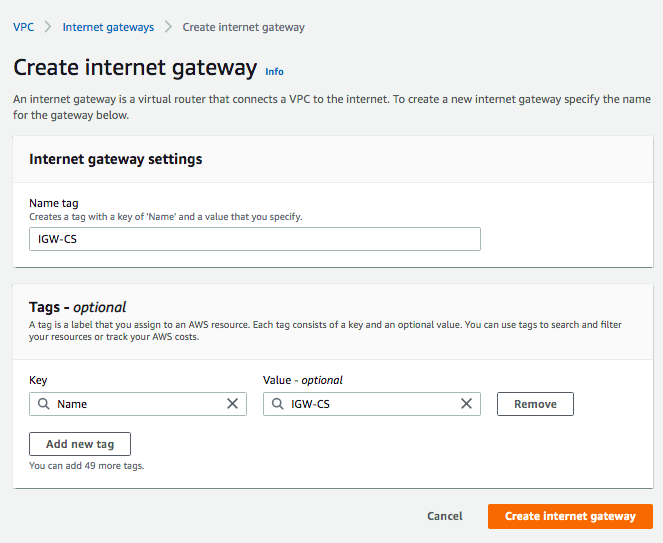 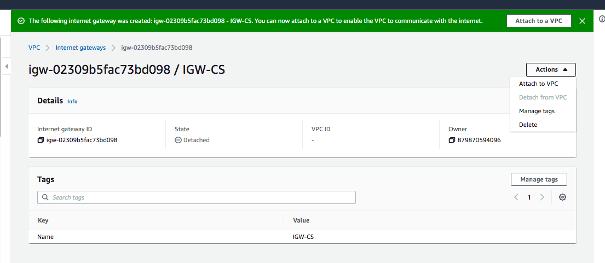 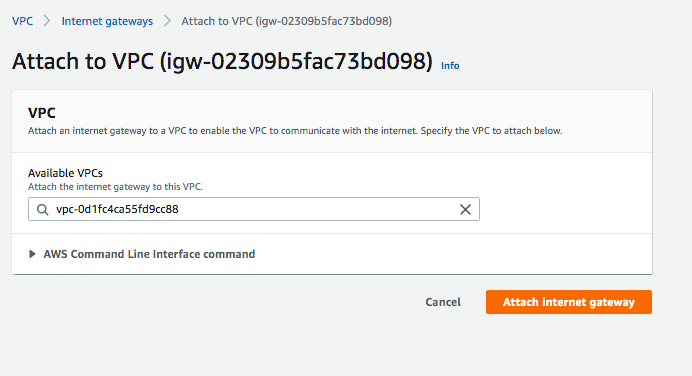Crear NAT Gateway
NAT sirve para dar acceso a Internet saliente a los recursos de Instancias en subredes privadas.
Para crear un NAT sigamos los siguientes pasos:
1. Seleccione Puertas de enlace NAT en el menú de la izquierda.
2. Haga clic en Crear puerta de enlace NAT e ingrese los siguientes detalles:
3. Nombre: ingrese un nombre para la puerta de enlace NAT (por ejemplo, my-nat-gateway).
4. Subred: seleccione la subred con el nombre public-subnet-1.
5. ID de asignación de IP elástica: haga clic en Asignar IP elástica para crear una nueva IP elástica para la puerta de enlace NAT.
6. Haga clic en Crear puerta de enlace NAT.
Configurar Tabla de rutas
Se utilizan para administrar el trafico de red
Configurar una tabla de enrutamiento:
1. Seleccione Tablas de ruta en el menú de la izquierda.
2. Seleccione la tabla de enrutamiento principal para la VPC que creó anteriormente.
3. Pase el mouse sobre la columna Nombre de la tabla de ruta seleccionada, luego haga clic en el icono de edición e ingrese el nombre tabla de ruta principal.
4. Haga clic en la pestaña Rutas a continuación y haga clic en Editar rutas.
5. Haga clic en Agregar ruta e ingrese los siguientes detalles:
5.1 Destino: ingrese 0.0.0.0/0 para que coincida con todo el tráfico no local.
5.2 Destino: seleccione Puerta de enlace NAT y luego seleccione la puerta de enlace NAT que creó anteriormente.
8. Haz clic en Guardar rutas.
Configurar Tabla de enrutamiento para subredes publicas
Se debe de crear una nueva tabla de enrutamiento y se debe de seleccionar la VPC creada anteriormente, Luego se debe de seleccionar la opcion de Internet GateWay y seleccionar la creada. Despues de esto, podemos asociar las sub redes creadas a la nueva ruta.
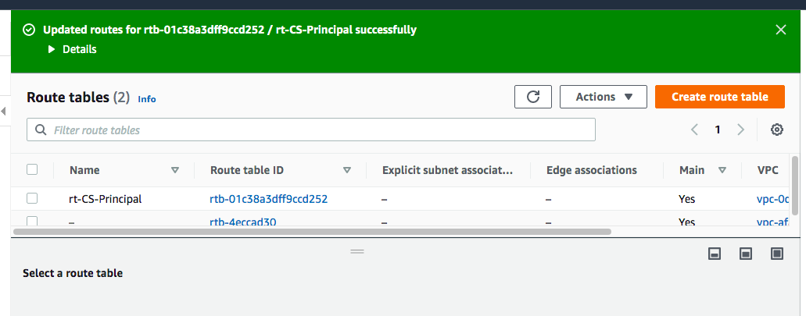 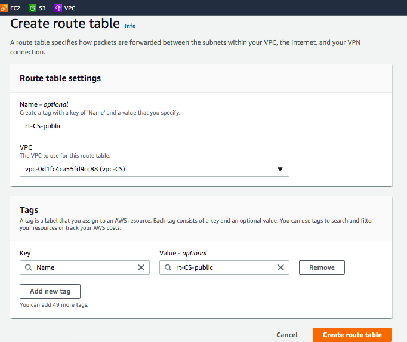 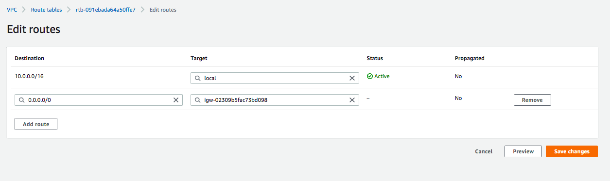 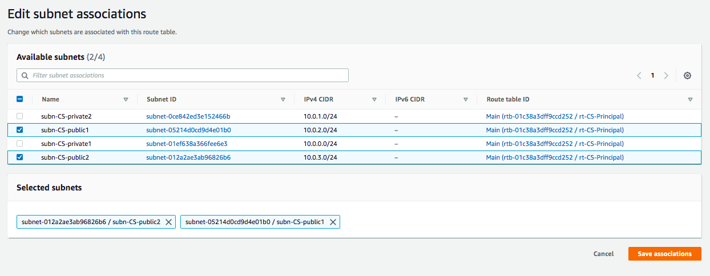Crear AutoScaling group
Para crear un Auto Scaling group sigamos los siguientes pasos:
1. Seleccione Auto Scaling Group abajo en el menú de la izquierda.
2. Haga clic en create Auto Scaling
3. Usamos una etiqued Name y le damos su respectivo nombre y luego una descripcion.
4. Seleccionamos en AMI la opcion Linux 2.
5. En el tipo de instancia: T2.Micro .
6. Por el tipo de ejemplo no seleccionamos un grupo de seguridad.
7. En Resource tag la etiqueda Name, un valor y agregamos la opcion volumes
8. En detalles avanzados seleccionamos: List_S3
9. En user data pegamos el script que deseamos corra al crearse las instancias(lo pegare abajo):
10. Volemos a la pantalla anterior y refrescamos la opcion de template, y seleccionamos la creada
11. Seleccionamos las zonas de disponibilidad
12. No elegimos load balancer(despues lo haremos)
12. Seleccionamos la configuracion en cantidad de maquinas que deseamos utilizar y luego añadimos una etiqueta y damos clic en crear.
#!/bin/bash
sudo yum update -y
sudo yum install git -y
curl -o- https://raw.githubusercontent.com/nvm-sh/nvm/v0.34.0/install.sh | bash
#https://stackoverflow.com/questions/54415841/
nodejs-not-installed-successfully-in-aws-ec2-inside-user-data
export NVM_DIR="$HOME/.nvm"
[ -s "$NVM_DIR/nvm.sh" ] && \. "$NVM_DIR/nvm.sh"
nvm install 7
nvm install node -y
node -e "console.log('Running Node.js ' + process.version)"
#mkdir /tmp/proyecto #Comando para crear carpetas
cd
git clone https://github.com/abkunal/Chat-App-using-Socket.io.git
cd /Chat-App-using-Socket.io
pwd
npm install
npm install -g pm2
pm2 start app.js
sudo amazon-linux-extras list | grep nginx
sudo amazon-linux-extras enable nginx1
sudo yum clean metadata
sudo yum -y install nginx
nginx -v
cd /etc/nginx
sudo aws s3 cp s3://nginx-ceutec-infra/nginx.conf nginx.conf
sudo service nginx restart
Crear Load Balancer
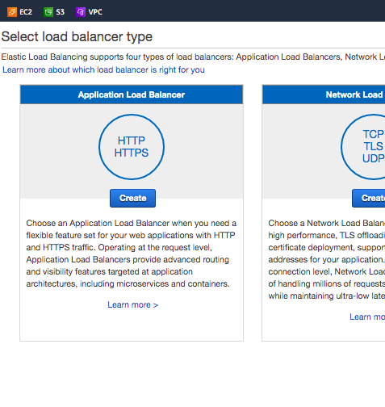 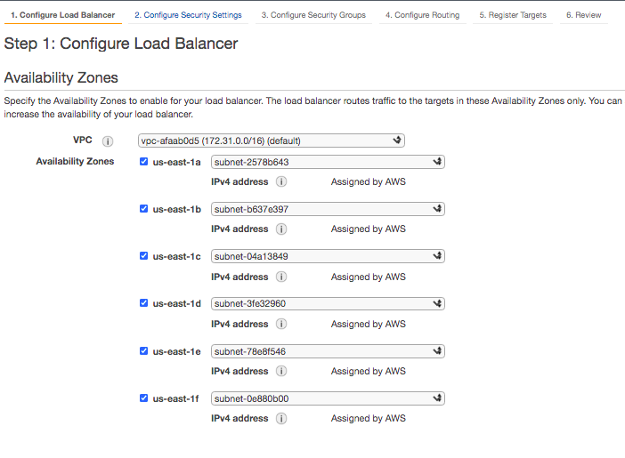 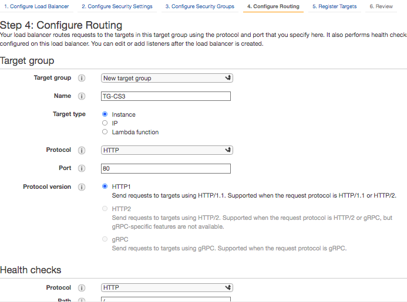 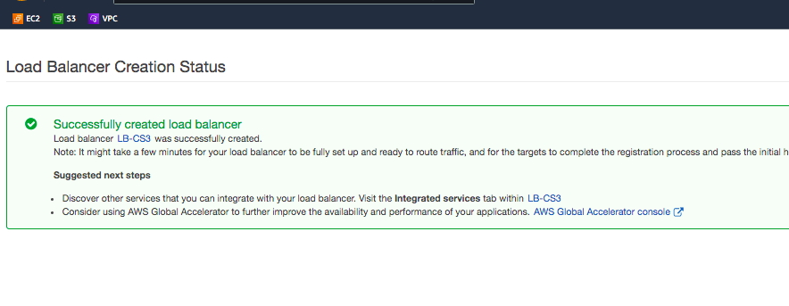Ahora revisamos que este todo funcionando:
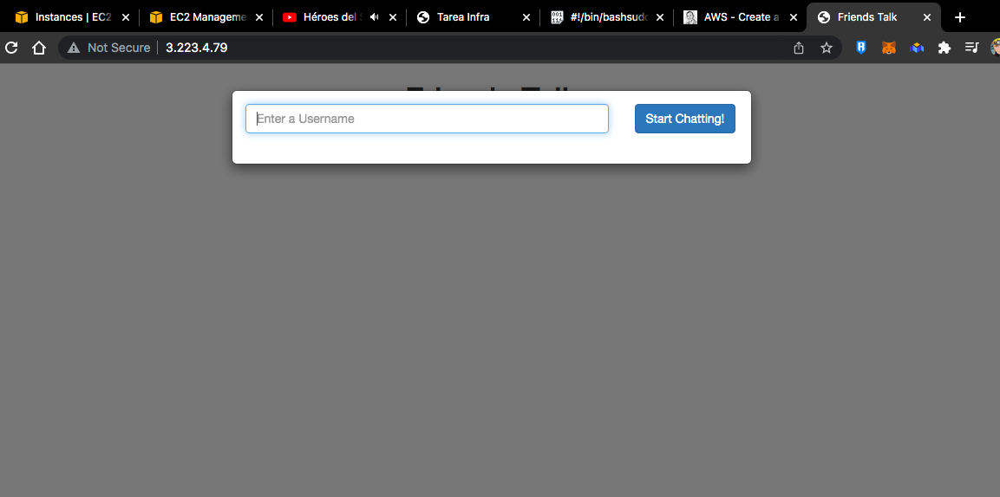Eliminar todo
Eliminar puerta de enlace NAT
1. Vaya a la sección Servicio de VPC y seleccione Puertas de enlace NAT en el menú de la izquierda.
2. Seleccione la puerta de enlace NAT creada anteriormente (my-nat-gateway) y haga clic en Acciones y Eliminar puerta de enlace NAT.
3. Ingrese eliminar en el campo de texto de confirmación y haga clic en Eliminar.
Liberar IP elástica
1. Una vez eliminada la puerta de enlace NAT, seleccione Direcciones IP elásticas en el menú de la izquierda.
2. Seleccione la dirección IP que se asignó a la puerta de enlace NAT, haga clic en Acciones y Liberar dirección IP elástica.
Eliminar VPC
1. Seleccione Sus VPC en el menú de la izquierda.
2. Seleccione la VPC que creó al comienzo del tutorial (my-vpc) y haga clic en Acciones y Eliminar VPC.
3. Ingrese eliminar en el campo de texto de confirmación y haga clic en Eliminar.